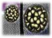

Mind Synergy
In 1984, Koruga, from the University of Belgrade, met Stuart Hammeroff
of the University of Arizona. They both, independently, had begun to do
research with nanobiology in the 1970's. They met in 1984, and their work
as a team is characterized by "and the implementation of knowledge
from nanobiology to nanotechnology." Koruga's
interest lies in research on Fullerenes in science and nanotechnology, and
Hammeroff's research has focused on Scanning Tunneling Microscopy (STM).
Buckminsterfullerene
In 1985 Richard Smalley and Harold
Kroto and their team of chemists at Rice University, zapped graphite in
a laser vaporization cluster-beam, creating a strange new form of carbon
-- Fullerene C60 and called it Buckminsterfullerene. These molecules were
hollow, shaped like a soccer ball, and closely resembled Buckminster Fuller's
geodesic domes -- thus "Buckyballs."
Based on a pentagonal structure, these molecules exhibited very unusual
electrical properties. Depending on how they were combined with other substances,
they could function as an insulator, a conductor, a semiconductor, or a
superconductor.